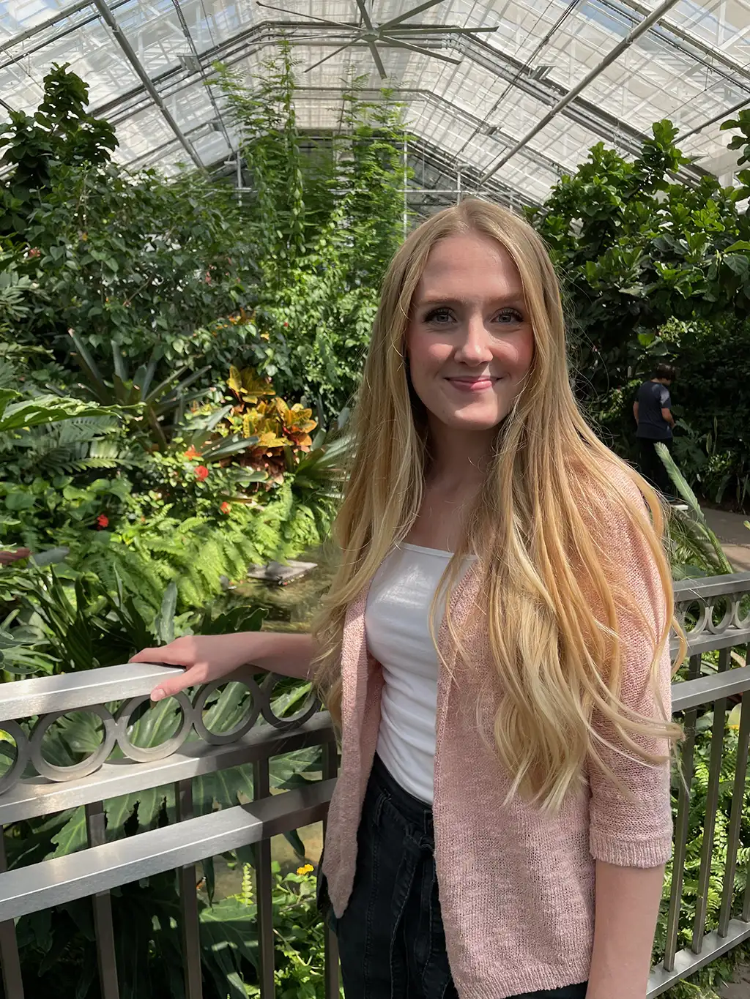

About Lauren's Plants
Hi! My name is Lauren, I'm the face behind Lauren's Plants. I hope you have fun exploring my website and get to learn more about one of my biggest passions. I started collecting houseplants when I was in high school, mostly just succentlents and the like. When I moved away for collge in Utah, my collection just grew. I've had all different types and sizes of plants, some of which I've loved and others that I did not. Through much trial and error I have created a lush jungle-like environment in my home filled with luscious greenery, and I want to help you do the same. I have narrowed down some of my favorite plant shops you can purchase plants from as well. Thanks for being here!
Main Plants We Will Explore
- Succulents-
- any plant with thick fleshy tissues adapted to water storage
- Trees-
- plants with a thick stem that have adapted to being grown and can thrive indoors
- Tropical Plants-
- a plant that grows naturally in a tropical climate, which is a region of the Earth that is warm and humid and surrounds the equator.
My Favorite Plants
- Fiddle Leaf Fig
- Philodendron Moonlight
- Sansiveria Moonshine